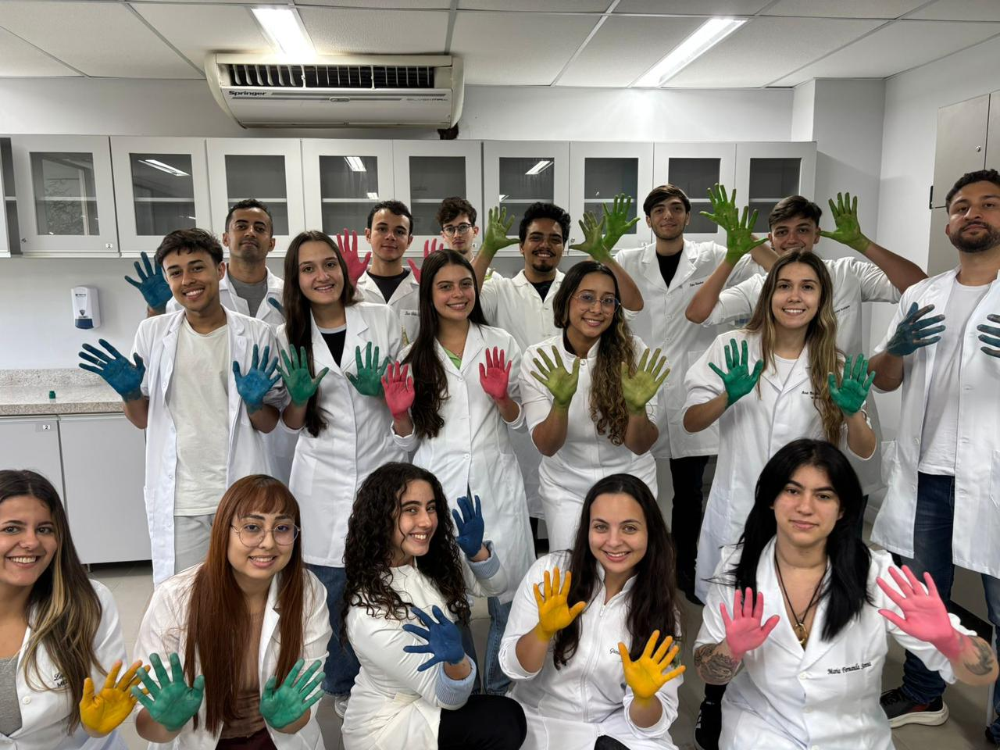
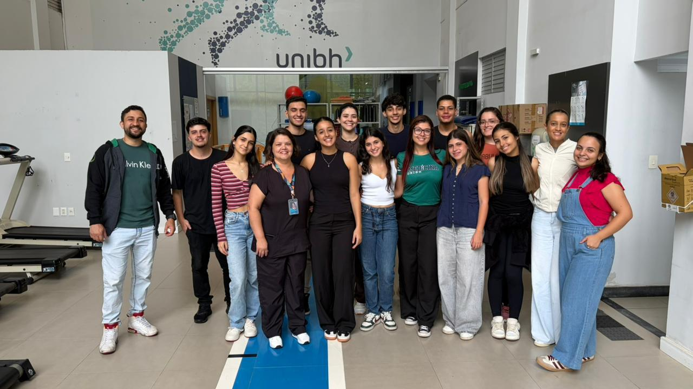

Apresentação
Meu nome é Diony Markcelino Gonçalves Reis, tenho 34 anos, sou casado e pai de uma menina de uma menina de cinco anos, que hoje representa uma das minhas maiores motivações diárias. Concluí o ensino médio por meio da Educação de Jovens e Adultos (EJA), em 2014, em uma fase da vida marcada por recomeços e pela construção gradual dos meus objetivos pessoais e profissionais.
A medicina surgiu inicialmente como um sonho de infância, mas, durante a adolescência e parte da vida adulta, esse desejo acabou sendo deixado de lado pelas circunstâncias da vida. Com o passar dos anos, porém, esse sonho retornou com intensidade ainda maior, acompanhado de maturidade, propósito e consciência sobre o significado dessa escolha. Hoje, além da possibilidade de ascensão social, vejo na medicina a realização de um projeto de vida que envolve dedicação, transformação pessoal e compromisso humano.
Ingressar no curso tem sido mais do que alcançar uma meta acadêmica; tem sido viver experiências que diariamente reafirmam minha decisão. A cada novo aprendizado, prática e desafio, fortalece-se em mim o desejo de um dia conquistar o CRM sem perder a sensibilidade diante dos momentos extraordinários que a formação médica proporciona. Atualmente, posso afirmar com convicção que estou vivendo um sonho.
Aprendizagem e Desempenho
1º Bimestre
O curso de Medicina, como um todo, tem sido uma experiência difícil de descrever em palavras. Desde os primeiros conteúdos apresentados, percebi o quanto me identifico com o estudo do corpo humano, seus sistemas e suas complexas relações fisiológicas. Nas Unidades Curriculares I, II e V, tive grande afinidade com temas como homeostasia, especificidade enzimática, senescência celular, sinalização celular, tecidos, histologia, ossos e suas classificações e funções, além de conceitos introdutórios de farmacocinética e farmacodinâmica.
Além das ciências biológicas, também considero extremamente enriquecedor o aprendizado relacionado ao Sistema Único de Saúde. Compreender a construção histórica do SUS a partir da Reforma Sanitária, assim como seus princípios de integralidade, universalidade, longitudinalidade e coordenação do cuidado, ampliou minha percepção sobre o verdadeiro papel social da medicina e sobre a importância do cuidado centrado no paciente.
Outro aspectomarcante da minha trajetória neste primeiro semestre tem sido a participação nas ligas acadêmicas. Fazer parte da LAPT (Liga Acadêmica de Pneumologia e Tisiologia) e da LACLIM (Liga Acadêmica de Clínica Médica) representa uma oportunidade ímpar de aprofundar conhecimentos, desenvolver raciocínio clínico e fortalecer ainda mais minha conexão com a prática médica e com o ambiente acadêmico.
De forma geral, acredito que venho apresentando um bom desempenho ao longo do curso, não apenas pelas notas ou pelo conteúdo assimilado, mas principalmente pelo envolvimento genuíno com o processo de aprendizagem. Tenho compreendido que, quando se vive um propósito verdadeiro, até mesmo os desafios deixam de ser obstáculos e passam a se transformar em oportunidades constantes de crescimento e amadurecimento.
Minha principal dificuldade neste primeiro semestre não esteve necessariamente relacionada aos conteúdos acadêmicos, mas sim ao desafio de conciliar a vida universitária com as responsabilidades pessoais e profissionais. Ser estudante de Medicina enquanto exerço meus papéis como marido, pai e trabalhador exige equilíbrio emotional, disciplina e uma constante reorganização da rotina.
A intensidade do curso, somada às demandas familiares e profissionais, torna a rotina, em muitos momentos, exaustiva. Administrar o tempo entre estudos, trabalho e família tem sido um dos maiores desafios dessa nova fase da minha vida. Ainda assim, compreendo que esse processo também faz parte da minha formação, não apenas como futuro médico, mas como ser humano.
Apesar das dificuldades, permaneço firme no propósito que me trouxe até aqui. Tenho aprendido que, quando existe um objetivo verdadeiro, os desafios deixam de ser apenas obstáculos e passam a representar oportunidades de crescimento, maturidade e fortalecimento pessoal. Sigo resiliente, determinado e convicto de que sou capaz de superar cada uma dessas dificuldades com dedicação e constância.
Mais do que apenas pretender, compreendo que preciso organizar minha rotina de forma consciente e disciplinada para conseguir equilibrar minha vida acadêmica, profissional e familiar. Ser estudante de Medicina, pai, marido e trabalhador representa, para mim, conquistas extremamente significativas, construídas com esforço, renúncias e propósito ao longo da minha trajetória.
Meu plano de ação consiste em aprimorar minha gestão do tempo, estabelecer prioridades com mais clareza e criar uma rotina de estudos mais organizada e constante, sem negligenciar minha presença junto à minha família e às minhas responsabilidades profissionais. Entendo que manter esse equilíbrio exige maturidade, constância e, principalmente, comprometimento diário.
Mais do que enxergar essa caminhada como um desafio, escolho vê-la como um compromisso pessoal com tudo aquilo que considero importante na minha vida. Pretendo viver cada etapa dessa trajetória com intensidade, responsabilidade e gratidão, valorizando tanto as conquistas acadêmicas quanto os momentos ao lado das pessoas que caminham comigo. Ao final dessa jornada, tenho convicção de que cada esforço terá valido a pena.
2º Bimestre
No segundo bimestre, sinto-me satisfeito com minha trajetória acadêmica, principalmente por ter conseguido manter o ritmo de aprendizagem, a assiduidade e o comprometimento com o curso. Ao longo desse período, percebi uma evolução significativa na forma como estudo, interpreto os conteúdos e me posiciono como acadêmico de Medicina. Essa percepção de crescimento tem sido uma importante fonte de motivação para continuar avançando na minha formação.
As atividades práticas desenvolvidas na Unidade Básica de Saúde tiveram um papel fundamental nesse processo. A vivência no serviço ampliou minha compreensão sobre o funcionamento do Sistema Único de Saúde e permitiu que eu observasse, na prática, muitos dos conceitos estudados em sala de aula. Além de adquirir conhecimento técnico, essa experiência proporcionou momentos de reflexão sobre o cuidado em saúde, a realidade dos pacientes e a importância da atenção primária como porta de entrada do sistema.
No campo das ciências básicas, foi especialmente gratificante aprofundar meus conhecimentos sobre os metabolismos dos carboidratos, lipídios e proteínas, compreendendo de forma mais integrada os mecanismos que sustentam o funcionamento do organismo humano. Da mesma forma, os estudos em genética e embriologia despertaram grande interesse, contribuindo para uma compreensão mais ampla sobre o desenvolvimento humano e os processos biológicos que influenciam a saúde e a doença.
Outro aspecto marcante deste período foi o início do contato com a instrumentação e a paramentação cirúrgica. Essa experiência teve um significado especial para mim, pois pretendo seguir uma carreira na área cirúrgica. Ter a oportunidade de conhecer os princípios básicos do ambiente operatório e dos procedimentos relacionados à prática cirúrgica reforçou ainda mais minha motivação e meu entusiasmo em relação ao futuro da profissão.
Também tive a oportunidade de participar de um curso de sutura promovido por uma ligas acadêmica da UNIBH, a Liga de Cirurgia. Foi uma experiência extremamente enriquecedora, pois permitiu que eu tivesse contato prático com técnicas fundamentais e executasse os pontos básicos de sutura sob orientação adequada. Vivenciar esse aprendizado na prática foi algo marcante e reafirmou meu interesse pela área cirúrgica, mostrando a importância do treinamento contínuo para o desenvolvimento das habilidades médicas.
Ao refletir sobre este bimestre, considero que meu maior acerto foi permanecer constante, dedicado e aberto ao aprendizado. Mais do que acumular conhecimentos, percebo que estou construindo gradualmente a postura, a responsabilidade e o raciocínio que a formação médica exige.
A reta final do primeiro período trouxe um acúmulo natural de avaliações, revisões de conteúdos extensos e a necessidade de entrega de portfólios e trabalhos integrados. O cansaço físico e mental decorrente da tripla jornada — estudos, trabalho e o papel fundamental de dar atenção à minha esposa e à minha filha — tornou-se ainda mais evidente.
Gerenciar a ansiedade típica do período de provas finais e garantir que nenhuma das esferas da minha vida fosse prejudicada exigiu um esforço redobrado, testando os limites da minha organização e da minha resiliência emocional.
Com a conclusão desta primeira etapa do curso, pretendo utilizar o período de transição para reavaliar e calibrar minhas ferramentas de estudo. Vou otimizar o uso de técnicas de estudo ativo e fluxos mais eficientes de revisão para fixar os conteúdos com menos desgaste de tempo.
Para os próximos períodos, o plano é blindar ainda melhor os momentos reservados à minha família, garantindo que o tempo com elas seja de total qualidade, e manter o foco inabalável na constância diária, entendendo que cada bloco de conteúdo dominado aproxima-me do exercício de uma medicina humana, técnica e verdadeiramente transformadora.
Registros do Semestre

Aula de Biossegurança

Conhecendo a CIS - Clinica Integrada de Saúde - Unibh